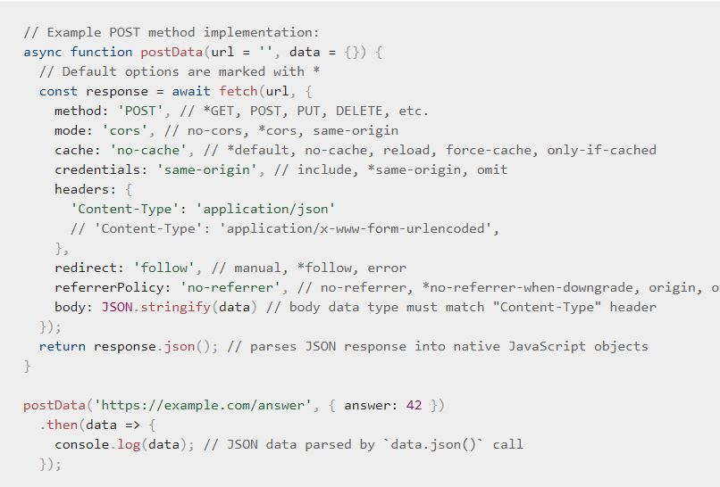

Week 10 Notes
Leaving the quake activity here for reference.
Constraint Validation API
Most browsers support the Constraint Validation API.
- The API consists of a set of methods and properties for form element DOM interfaces
- HTMLButtonElement
- HTMLFieldSetElement
- HTMLInputElement
- HTMLOutputElement
- HTMLSelectElement
- HTMLTextAreaElement
- These elements then have properties, and the list can be found on MDN
- patternMismatch, for example, returns true if the value does not match the specified pattern and false if it does
- tooLong returns true if the value is longer than the max length specified
- Most properties will return a bool
- These properties will also have methods available
- checkValidity returns true if the element's value has no validity issues
- setCustomValidity(message) would allow you to add a custom error message to the element for specific errors
- The browser automatically displays error messages when the input value is incorrectly done
- This leads to two drawbacks
- There is no standard way to change their style with CSS
- Dependent on browser locale, meaning you can have a page in one language but an error message displayed in another one
- MDN goes through a detailed example, so I worked along with it here
- This leads to two drawbacks
- You can build a validation system without using the API
- This would take a bit more coding
- The example is on the MDN link above
Using Fetch
The Fetch API provides a JS interface for accessing and manipulating parts of the HTTP pipeline. It also provides a global fetch() method which allows devs to fetch resources asynchronously across the network. All information comes from MDN's post on Fetch.
- Three main differences from jQuery.ajax()
- The Promise returned from fetch() won't reject on HTTP error status, even if the response is HTTP 404 or 500
- Instead, it will be resolved normally with an "ok" status set to false, and it will only reject on network failure or if anything prevented the request from completing
- fetch() won't send cross-origin cookies unless you set the credentials init option
- The Promise returned from fetch() won't reject on HTTP error status, even if the response is HTTP 404 or 500
- The simplest form of a fetch request would have you pass in a URL alone, but is can accept an optional second parameter
- This second parameter is an init object that gives you control over different settings
- They are listed in this MDN page
- Here is an example of using an init object to specify special requests
- 
- This second parameter is an init object that gives you control over different settings
- A fetch() promise would reject with a TypeError under specific conditions which means certain errors would not stop the fetch()
- It may reject when a network error is encountered or CORS is misconfigured on the server side
- A 404 would not constitute a network error
- To check for a successful fetch() accurately, you would need to check that the promise is resolved and that the Response.ok property returns a "true"
- An example of this is in the Quakes Activity from this week
- You can pass in a request object, made with the Request() constructor, as an argument in fetch()
- As opposed to simply passing in a path, you can create a request object
- const myRequest = new Request('flowers.jpg', { //init settings });
- You could even pass in an existing request object to create a copy of it
- const anotherRequest = new Request(myRequest, myInit);
- As opposed to simply passing in a path, you can create a request object
- Response instances are returned when fetch() promises are resolved
- Most common response properties you will use are:
- Response.status - an integer containing the status code (default: 200)
- Response.statusText - a string corresponding to the HTTP status code message (default " ")
- Response.ok - a boolean checking that the status is in the range of 200-299
- Most common response properties you will use are:
Questions
- It's strange because I've practiced coding with file reading in another class, but it's not something I've worked with throughout studying web development. Where would you use it? Would this involve letting users upload files and the website doing something with it or something like that? Why is fetch() associated with it?
- Is there a case where you could want to duplicate a request and pass it in a fetch()? How is it used?